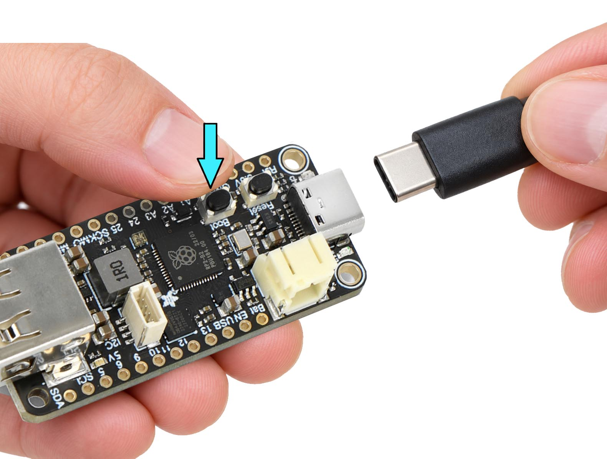
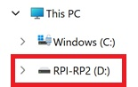
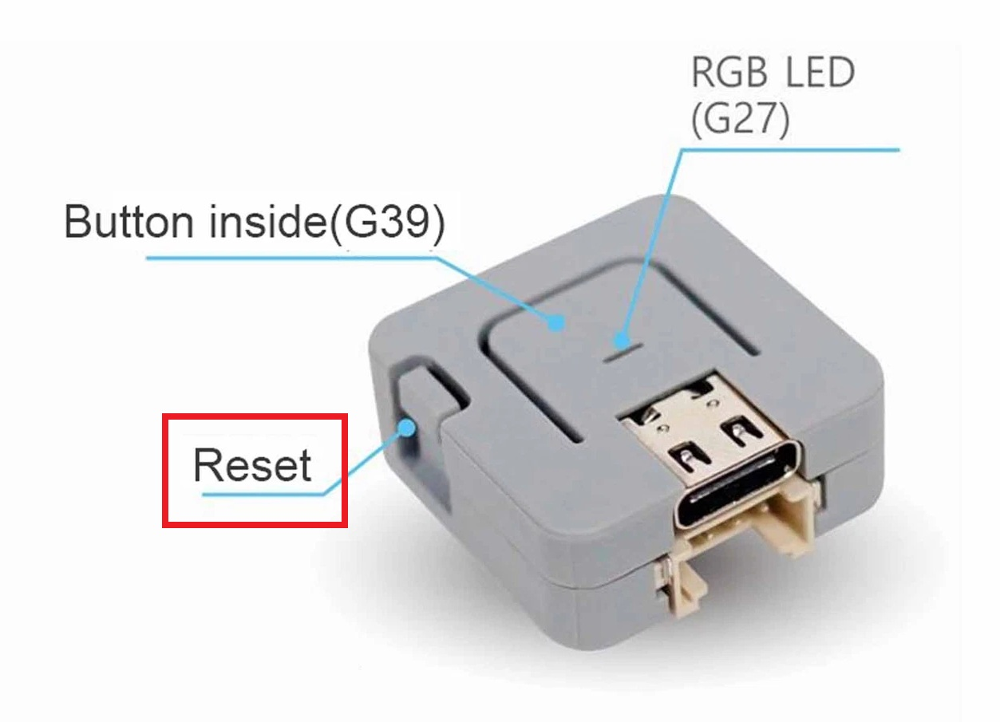

Flash your station
Complete firmware and configuration setup directly in your browser.
1
Enter BOOTSEL mode

Hold the BOOTSEL button on your Feather, plug in the USB cable,
then release. A drive named RPI-RP2 will appear in File Explorer.

The RPI-RP2 drive appears in your file explorer.
⏳ Waiting for RPI-RP2…
2
Flash unchanged firmware
Click below and select the RPI-RP2 drive. The browser writes the official firmware directly—there is no manual download or binary patching.
3
Save configuration to LittleFS
Wait for the RPI-RP2 drive to disappear and the board to restart. Then click below, select the RP2040 serial device, and the browser will send the form values to /config.json.
📟 RP2040 setup log
Flashing and configuration messages will appear here.
1
Connect your board
Plug the Atom Lite in via USB-C.
2
Flash unchanged firmware
Writes the bootloader, partition table, boot application, and unchanged application image. Takes about 30–60 seconds.
3
Save configuration to LittleFS
After the board restarts, the browser sends your configuration over USB serial. The firmware validates it, creates /config.json, restarts, and verifies the saved file.
Already flashed? Retry configuration
📟 Flash Log
Connect your board to see flashing progress here.
Optional: View the complete boot output

This step is not required for flashing or configuration. The Atom Lite restarts automatically after saving the configuration. If you want to inspect the complete startup log for troubleshooting, press the reset button shown in the image. This will restart the board without erasing the firmware or the saved /config.json.
📟 Serial Monitor
After flashing, click Connect to view your board's boot output.